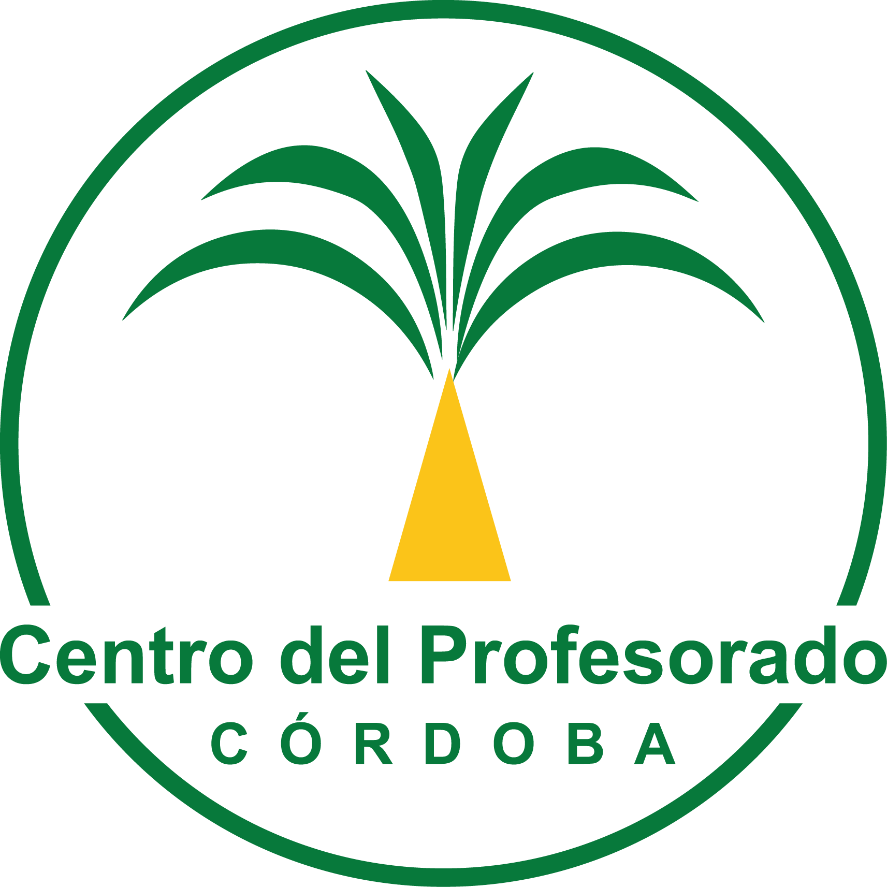

Centro del Profesorado de Córdoba
Formación del profesorado
Formación del profesorado
Detección de necesidades formativas del profesorado bilingüe y plurilingüe
Comparte tu experiencia para diseñar una formación práctica, conectada con las lenguas y con las necesidades de los centros educativos.
Los datos se utilizarán con fines educativos para detectar necesidades y planificar la formación del profesorado bilingüe y plurilingüe del CEP Córdoba. Las respuestas se guardan en Google Sheets, dentro de Google Workspace for Education, mediante la cuenta corporativa facilitada por la Consejería competente en materia de Educación de la Junta de Andalucía. El cuestionario está alojado en Vercel, que interviene técnicamente en la transmisión de las respuestas. Consulta la información sobre protección de datos. No se publicarán respuestas individuales identificadas.